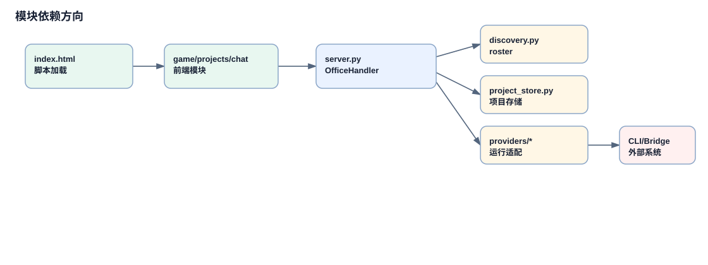

运行时模块地图与依赖方向
本页回答一个实际读代码问题：一个页面动作如何穿过静态前端、Python 服务、状态存储和外部 Agent provider。它不深挖某条业务链路，而是把模块之间的方向讲清楚。
运行时分层
浏览器层只拿到静态 HTML/CSS/JS。`game.js` 负责办公室画布和状态刷新，`chat.js` 负责聊天与 provider 面板，`projects.js` 负责项目看板、任务执行、评审和验收。
服务层是 `OfficeHandler`。它既继承 `SimpleHTTPRequestHandler` 服务静态资源，也手写大量 API 路由。这个选择让本地部署简单，但也让 `server.py` 成为最需要分段阅读的文件。
外部能力层由 provider adapter、OpenClaw gateway、Hermes CLI/API、Codex app-server bridge、Claude Code runtime、浏览器 CDP 组成。主服务通过 adapter 和 helper 函数访问它们，前端只看到归一化 API。

依赖图强调单向调用：Browser UI -> OfficeHandler -> store/presence/provider/external runtime。
连续模块穿透叙事
页面动作
用户在项目页点击按钮，`projects.js` 调用 `ProjectApi` 方法发出 fetch 请求，输入是 projectId、taskId、mode、dirtyFingerprint 等 UI 状态。
路由分发
`OfficeHandler.do_POST` 解析路径。请求不会进入框架路由表，而是在长条件分支里转给 `_handle_project_execution_*`、`_handle_meeting_*`、`_handle_codex_*` 等函数。
业务函数读写项目
项目相关函数通过 `_load_projects()`、`_save_projects()` 间接访问 `PROJECT_STORE`，最终落到 `VO_STATUS_DIR/projects-md/`。
Agent roster 和 presence
`get_roster()` 通过 `discovery.py` 合并 OpenClaw、Hermes、Codex、Claude Code；`gateway_presence` 把运行态投影成前端能渲染的状态。
provider 调用
任务执行或 A2A 通信根据 `providerKind` 调用 Codex/Hermes/Claude/OpenClaw 路径，再把结果归一化给项目状态机。
前端刷新
前端通过 polling、SSE 或重新 fetch 读取状态，更新项目卡片、画布状态、聊天气泡和会议提示。
状态落点
证据清单
| 模块 | 路径 |
|---|---|
| 前端入口 | `app/index.html`、`app/game.js`、`app/chat.js`、`app/projects.js` |
| 路由和业务 | `app/server.py:OfficeHandler`、`do_GET`、`do_POST` |
| Agent discovery | `app/discovery.py:discover_all_agents` |
| provider runtime | `app/providers/codex.py`、`app/providers/hermes.py`、当前未跟踪的 `app/provider_execution.py` |
关键概念补充
1. Presence Projection
出现位置：`app/server.py`、`app/gateway_presence.py`。它把 gateway、provider discovery、会议和旧 status 文件合并成 `working/idle/meeting/offline` 等画布状态。
2. Markdown Project Store
出现位置：`app/project_store.py`。项目和任务不再只是单个 JSON，而是写入 `VO_STATUS_DIR/projects-md/` 的 Markdown/frontmatter 目录。